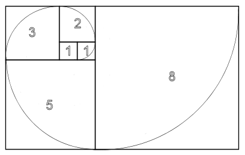

The Fibonacci sequence is named after Italian mathematician Leonardo of Pisa, known as Fibonacci. His 1202 book Liber Abaci introduced the sequence to Western European mathematics, although the sequence had been described earlier in Indian mathematics. The sequence described in Liber Abaci began with F1 = 1.
Fibonacci numbers are closely related to Lucas numbers L_n in that they form a complementary pair of Lucas sequences U_n(1,-1)=F_n and V_n(1,-1)=L_n. They are intimately connected with the golden ratio; for example, the closest rational approximations to the ratio are 2/1, 3/2, 5/3, 8/5, ... .
Fibonacci numbers appear unexpectedly often in mathematics, so much so that there is an entire journal dedicated to their study, the Fibonacci Quarterly. Applications of Fibonacci numbers include computer algorithms such as the Fibonacci search technique and the Fibonacci heap data structure, and graphs called Fibonacci cubes used for interconnecting parallel and distributed systems. They also appear in biological settings, such as branching in trees, phyllotaxis (the arrangement of leaves on a stem), the fruit sprouts of a pineapple, the flowering of an artichoke, an uncurling fern and the arrangement of a pine cone's bracts.
From Wikipedia's page on Fibonacci numbers.

Enter the number of fibonacci numbers you'd like to see:
| n | fib(n) |